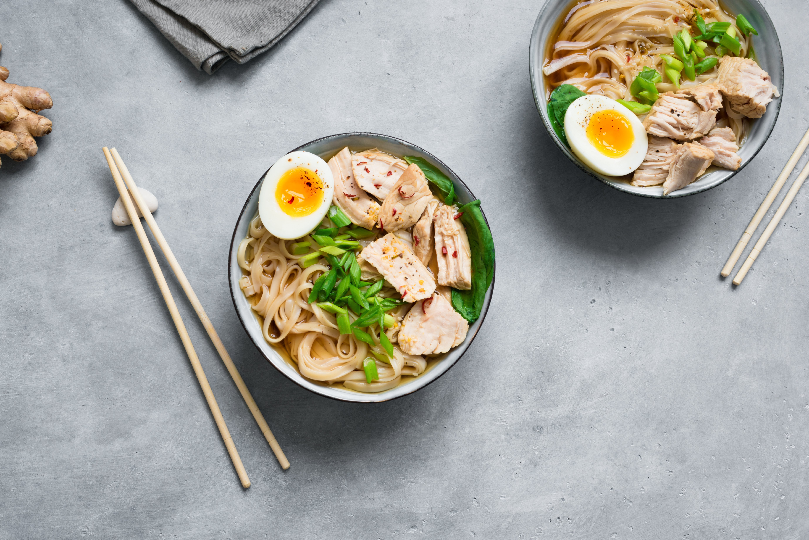

Ramen Noodle Soup

Ingrediants
- 2 small chicken breast fillets
- 2 tsp garlic infused olive oil
- 2 tsp sesame oil
- 2 tsp fresh ginger, minced
- 2 Tbsp soy sauce
- 1.5 Tbsp rice wine vinegar
- 2 tsp white sugar
- 4 cups low FODMAP chicken stock
- 1 buncch bok choy, seperated into pieces
- 2 large eggs
- 1/2 cup green spring onion tops, finely chopped
- Dry rice noodles or soba noodles
- Salt and pepper
Instructions
-
Preheat oven to 180°C (375°F). Season the chicken generously with salt and pepper. Add garlic infused olive oil to a large, oven-safe pan over medium heat. Add the chicken and cook ~5 mins on each side until golden brown. Transfer the pan to the oven and roast for 15-20 minutes, until the chicken is cooked through. Remove from the oven, transfer the chicken to a plate and cover with foil until ready to serve.
-
Meanwhile, heat the sesame oil in a large pot over medium heat, until shimmering. Add the ginger, and cook for a few minutes until softened. Add the soy sauce, rice wine vinegar and sugar and stir to combine. Cook for another minute. Add the stock, cover, and bring to boil. Remove the lid, and let simmer uncovered for 5 minutes, then add the bok choy. Simmer gently for another few minutes (until bok choy is wilted), and season with salt, to taste.
-
To make the soft-boiled eggs, fill a pot with enough water to cover the eggs, and bring to a boil. Gently lower the eggs into the boiling water, and let simmer for ~ 8 mins.
-
When cooked, use a slotted spoon to remove eggs from pot (keep water to cook noodles) into a bowl of cold water to stop the cooking process. When eggs are cool enough to handle, carefully peel away the shell and slice in half, lengthwise. Set aside until ready to serve.
-
Slice the chicken into thin pieces. Set aside. When the eggs finish cooking, add the noodles to the boiling water. Cook for 2-3 minutes, until soft, then divide the noodles into two large bowls. Add the sliced chicken and the ramen broth. Top with the sliced spring onion tops and soft boiled egg. Serve immediately.